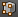

Material didáctico: Ábaco
Para comenzar necesitamos dos objetos: un cilindro y una esfera.
Aprovechando la localización del Cursor 3D sacamos uno de ellos (Añadir/Malla/UV Esfera) y acto seguido sin cambiar la localización del Cursor 3D añadimos el otro (Añadir/Malla/Cilindro).
- A la esfera le aplicamos un escalado en el eje X ("SX")
- Al cilindro, tras girarlo 90º en el eje Y ("RY90"), lo escalamos ("S") para que sea muy alargado y simule la varilla.
Seleccionamos primero el cilindro y después la esfera para juntarlos (Objeto/Unir); así, al aplicarle un modificador Serie, se obtienen los clones a la vez y manteniendo las posiciones relativas entre ellos.
¿Por qué es importante el orden de selección?
En esta ocasión es importante porque el cilindro ha sido girado en Modo Objeto  y por lo tanto sus ejes Locales ya no se corresponden con los Globales.
y por lo tanto sus ejes Locales ya no se corresponden con los Globales.
En el supuesto de que seleccionáramos primero la esfera y después el cilindro, este último actuaría de objeto dominante y por lo tanto la unión final quedaría con los ejes Locales y Globales no coincidentes. La consecuencia sería que al aplicar el modificador Serie nos encontraríamos con algo así (curiosamente es lo que queremos pero no a costa de la incoherencia entre ejes).
No es nada grave pero conviene acostumbrarse a mantener la coherencia siempre. En realidad es posible decirle a Blender que altere los ejes Locales para hacerlos coincidir con los Globales pero eso lo analizamos en el apartado Simetría no interactiva.
Como al aplicarle el modificador en cuestión, el duplicado se crea en el eje X por defecto, cambiamos Desplazamiento relativo en X = 0.000 y 1.300 en Z. En el parámetro Cantidad optamos por 5. Una vez creados los clones aplicamos el modificador.
Con la aplicación del modificador se ha creado un objeto, pero nosotros lo queremos independizar en diez distintos (cinco bolas y cinco varillas). Así que pasamos a Modo Edición  y hacemos Malla/Vértices/Separar (o tecla "P") y en el menú emergente escogemos Por partes perdidas.
Sin embargo, para mayor comodidad, desde Modo Objeto  seleccionamos ahora todas las varillas y las volvemos a juntar ("Control_J").
seleccionamos ahora todas las varillas y las volvemos a juntar ("Control_J").
Llega el momento de echar mano del modificador Serie otra vez, por ejemplo para la bola de arriba.
Debe ocurrir lo mismo con las otras cinco bolas. Sin embargo no es necesario ir una por una asignando el modificador Serie sino que lo resolveremos de la siguiente forma:
- En Modo Objeto
 seleccionamos todas las bolas dejando la que ya tiene el modificador Serie para el final. De ese modo queda como dominante.
seleccionamos todas las bolas dejando la que ya tiene el modificador Serie para el final. De ese modo queda como dominante.
- Hacemos Objeto/Crear vínculos/Modificadores.
Conseguimos el resultado esperado. En este caso el modificador de cada una de las bolas es independiente; se han copiado pero no se han enlazado. Esto quiere decir que si se aumenta la Cantidad de uno, eso no afectará a los demás.
Antes de seguir asignamos colores a cada bloque de bolas. Estos pueden ser los hexadecimales:
- E7E7E7
- CF8200
- AF0000
- 469738
- 005ABD
En render presentan este aspecto.
Debemos pulsar Aplicar en todos y cada uno de ellos y después separar todas las bolas para que sean independientes. El camino más corto para esto último es juntar las cinco filas de bolas (Objeto/Unir) y luego en Modo Edición separar tal y como hicimos antes.
Una última edición importante es seleccionar todas las bolas y recolocarles el Origen de forma masiva con un único Origen/Origen a la geometría en el cuadro de Herramientas ("T").
En realidad ahora sólo nos queda diseñar la estructura que sujeta las varillas. Usando técnicas que ya conocemos de modelado. Esta es nuestra propuesta.
Como las cuentas del ábaco son independientes resulta muy fácil crear una composición.